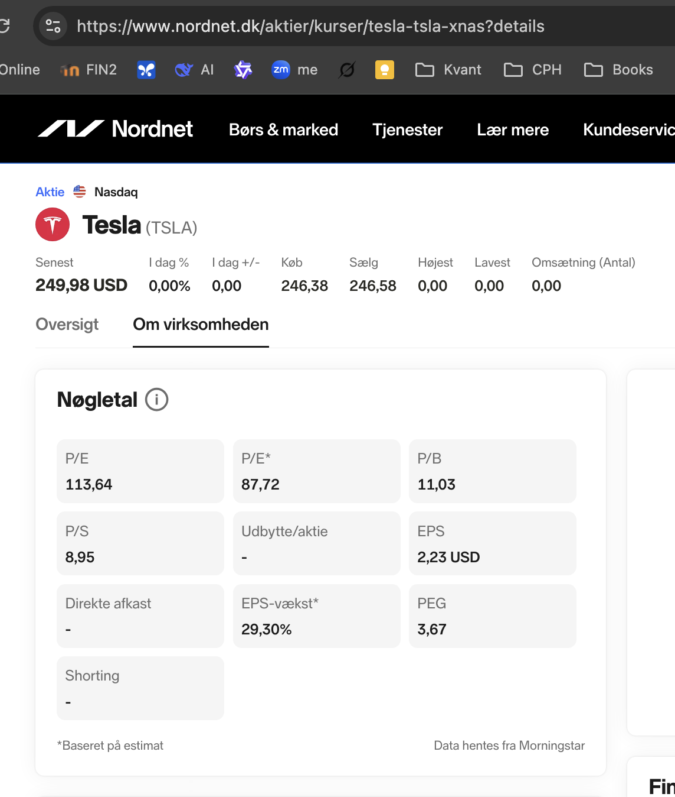
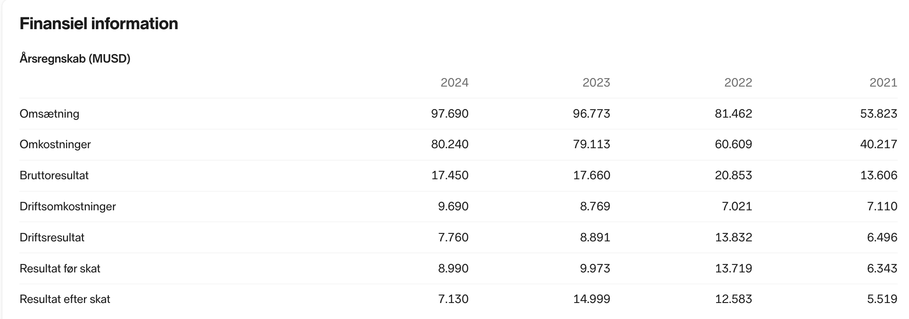
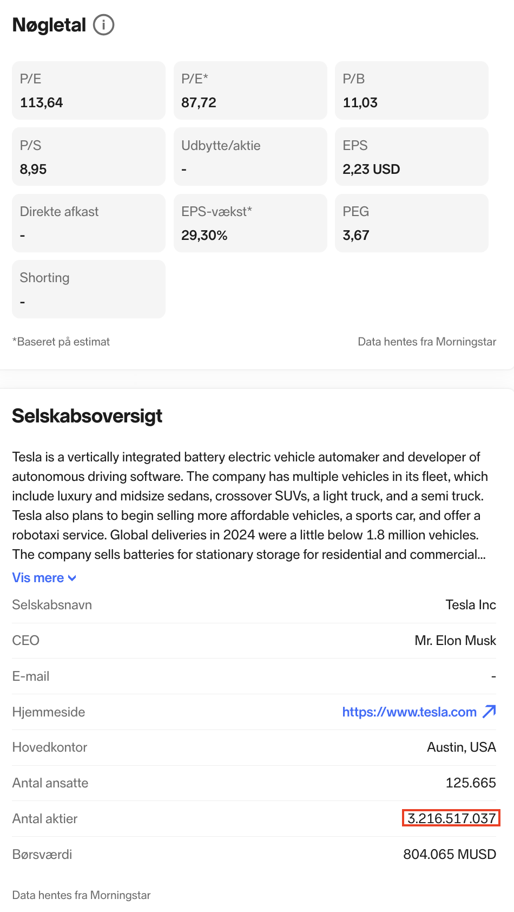
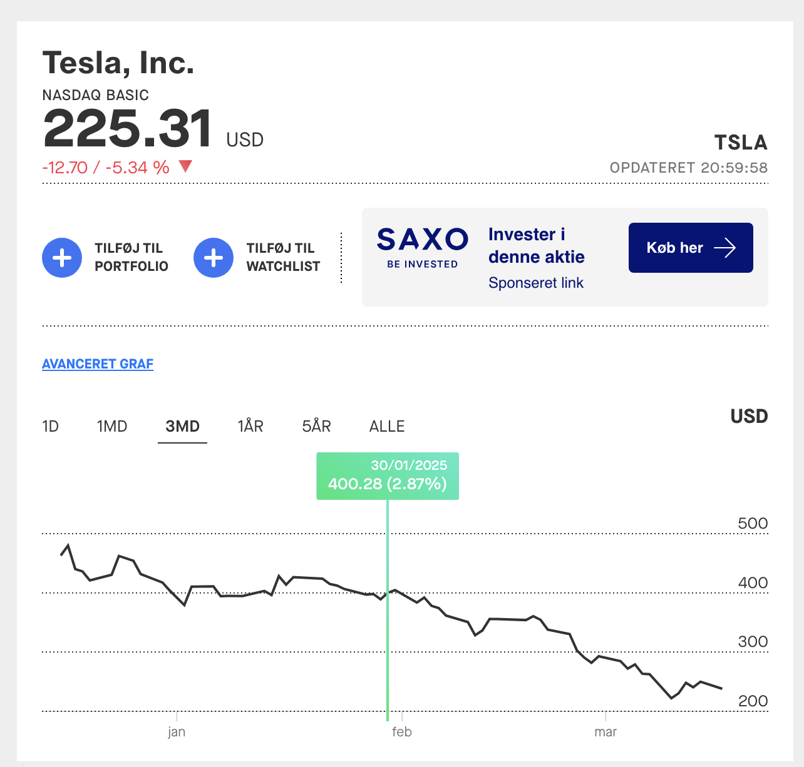
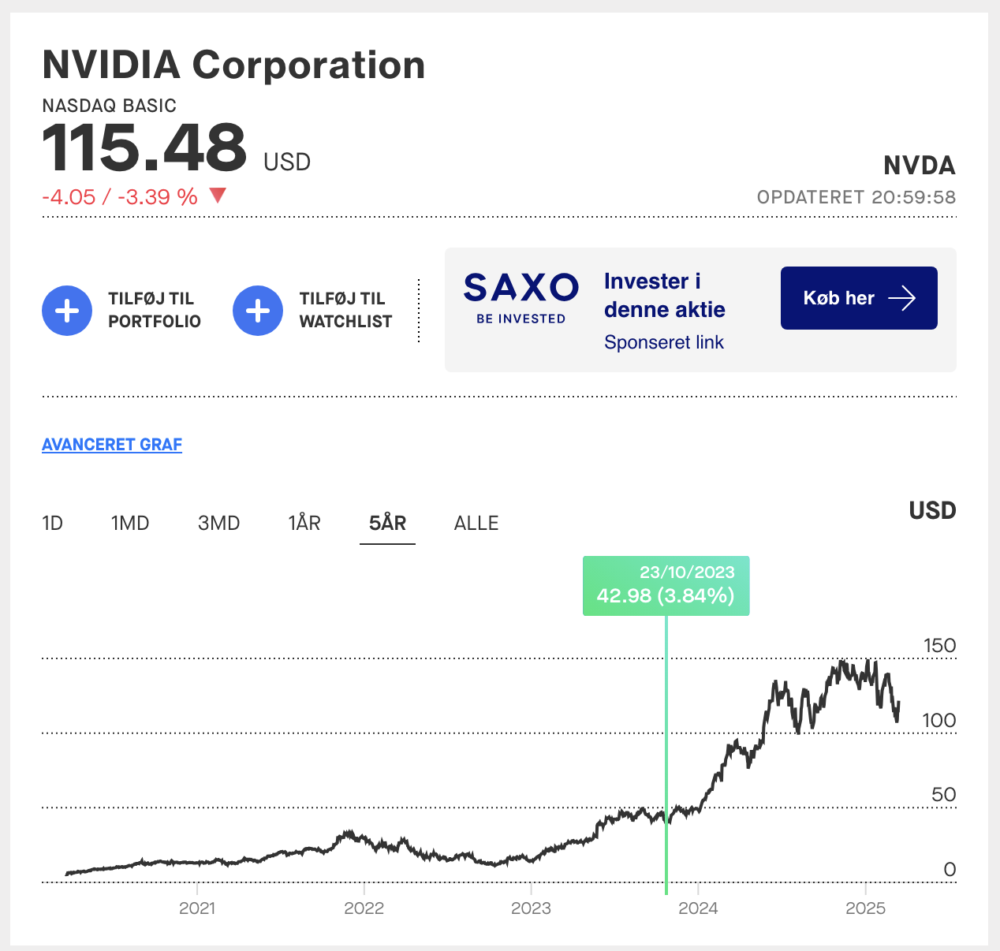
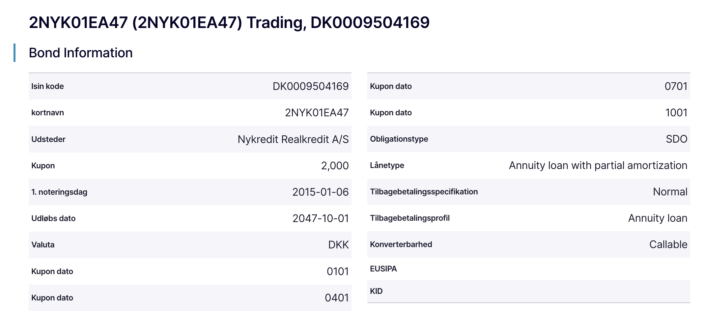
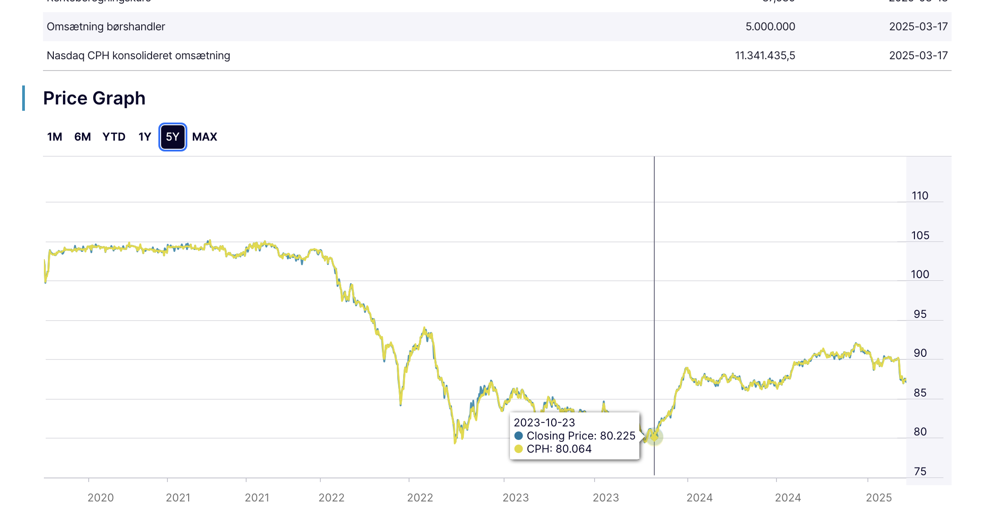
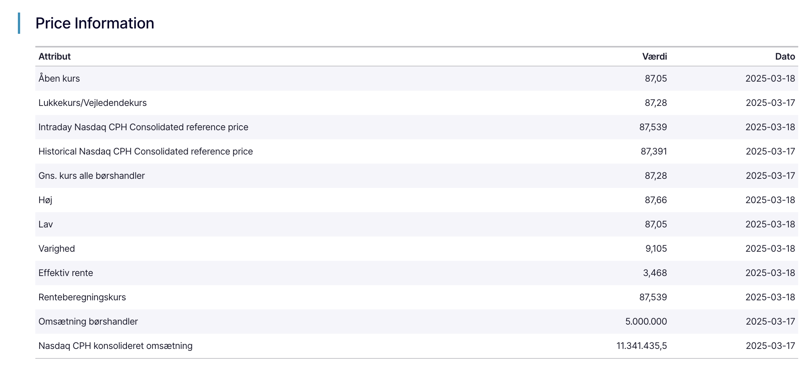

-

Finansiel rådgivning - Privat
Løsningsforslag
Investering
Formål:
Rådgivning i forbindelse med Forsikringer.
Anslået tidsforbrug:
5 timer
Forudsætning:Materialerne er beskrevet i introen til ugen, herudover kan følgende links være nyttige:
Skatteskabelon
Excel Skatteskabelonen
Links til relevante sider
Nordnet aktiekurser
Nasdaq.com
Euroinvestor.dk
Realkredit Danmark
Finans Danmark
Opgave:
Besvar spørgsmålene, upload i Workshop inden deadline.
Feedback:
Du kan se undervisers løsningsforslag og sammenligne med din egen opgave, når du har afleveret din besvarelse og markeret afleveringen som gennemført.
Bemærk Workshop opgaven er ikke obligatorisk, men det anbefales absolut at løse denne.
Oplysninger
Du er investeringsrådgiver, du har et møde med din kunde Emma Lund Gjerstrup der har nogle spørgsmål i forbindelse med investering:
Emma har læst om et børsnoteret selskab – selskab A - med følgende oplysninger:
Resultat efter skat 10 mia.
Antal aktier 100 mio.
Aktiekurs (P) 850
Emma har allerede nogle værdipapirer:
Hun har 23. november 2023 købt 45 NVIDIA aktier tickerkode: NVDA
Hun har 30. januar 2025 købt 22 TESLA aktier tickerkode: TSLA
Herudover har hun købt 23 november 100 Nykredit Realkredit A/S 2% udløbsdato 2047-10-01 ISIN-kode: DK0009504169
Emma overvejer at investere i flere Tesla TSLA på NASDAQ børsen i USA, hun har nogle spørgsmål i den forbindelse.
Spørgsmål
-
Er det korrekt at EPS er indtjening pr. aktie er 85,- kr. for selskab A?
Løsningsforslag:
Indtjening pr aktie kan udregnes efter følgende formel:
EPS = indtjening pr aktie = Overskud efter skat/Antal aktier = 10.000.000.000 / 100.000.000 = 100
Hver aktie giver en indtjening på 100 der er 100 mio. aktier så tilsammen giver de resultatet efter skat på 10 mia.
-
Er det korrekt at P/E altså indtjening pr. aktie er 100 for selskab A?
Løsningsforslag:
P/E = Kurs pr. aktie / Indtjening pr. aktie = Kurs / EPS = 850 / 100 = 8,5
Sagt med andre ord man betaler 100 for en indtjening på 8,5 pr år.
-
Hvad er EPS for Tesla ticker symbol: TSLA på Nasdaq?
Vink: Benyt Nordnet husk det er TSLA aktien på Nasdaq i USD, her finder du yderligere nøgletal når du klikker på fanen "Om virksomheden"
Løsningsforslag:
EPS er 2,23 USD

-
Hvad er resultatet efter skat for 2024 regnskabsåret for Tesla TSLA omregnet til danske kroner?
Vink: Benyt Nordnet husk det er TSLA aktien på Nasdaq i USD, her finder du yderligere nøgletal når du klikker på fanen "Om virksomheden"
Løsningsforslag:
Resultatet 7.130.000.000 USD dvs. 7,13 mia. USD dvs. cirka 49 mia DKK.

-
Hvor mange Tesla TSLA aktier er der der?
Løsningsforslag:
Der er udstedt 3,22 mia. aktier.

-
Hvad er P/E for TSLA, hvordan er dette et niveau i forhold til NVIDIA?
Løsningsforslag:
P/E for TSLA er 113,64, det betyder man betaler 114 kroner for hver krones indtjening.
Dette er en meget høj P/E, set i forhold til f.eks. NVIDIA P/E 40,98.
NVIDIA som producerer chips til AI, er en aktie som markedet har meget høje forventninger til.
-
Er Tesla en defensiv aktie?
Løsningsforslag:
Nej Tesla er en cyklisk aktie. Cykliske aktier er karakteriseret ved, at deres værdi og indtjening svinger i takt med den generelle økonomiske udvikling. Når økonomien er i vækst, stiger efterspørgslen efter produkter som biler, hvilket kan øge Tesla's indtjening og aktiekurs.
Danske defensive aktier er f.eks.
Novo Nordisk A/S
Carlsberg A/S
Coloplast A/S
Danske cykliske aktier er f.eks.
A.P. Møller – Mærsk A/S
FLSmidth & Co. A/S
Rockwool International A/S
-
Nævn kort højst 3 argumenter for at købe TSLA
Løsningsforslag:
- Tesla er langt fremme med udvikling af selvkørende biler, de har planer om i år at introducere fuldt selvkørende taxa'er cybercabs
- Tesla er langt fremme med udvikling af robotter, robotten hedder Optimus.
- Tesla har oplevet stabil vækst i deres division for energi-lagring Megapacks.
-
Nævn kort højst 3 argumenter mod at købe TSLA
Løsningsforslag:
- Elon Musk er en kontroversiel person, der har/kan skade brandet.
- Hvornår og om FSD og robotter bliver en forretning, kan være behæftet med en del usikkerhed.
- USA's handelskrig med mange lande i verden, vil kunne få en negativ effekt på Tesla, der kan blive ramt af højere told.
-
Hvis Emma fortsat ønsker at købe flere TSLA aktier, hvilken investeringshorisont bør hun da have?
Løsningsforslag:
Henholdt til usikkerheden omkring tidsplaner for FSD og Optimus, bør hun have en investeringshorisont på mindst 5 til 10 år. -
Hvis Emma fortsat ønsker at købe flere TSLA aktier, vil du da anbefale hende at købe TSLA eller TL0 på den tyske børs?
Løsningsforslag:
Når du investerer i Tesla-aktier noteret i EUR, eliminerer du valutarisikoen mellem USD og EUR, da aktierne handles og afregnes i EUR. Dette betyder, at udsving i USD-kursen ikke direkte påvirker værdien af din investering. Derimod, hvis du køber TSLA-aktier noteret i USD, vil ændringer i USD/EUR-kursen påvirke din investering, da en styrkelse af EUR i forhold til USD kan reducere værdien af din investering målt i EUR eller DKK.
Faktorer såsom handelsomkostninger, likviditet bør nævnes, dog vil en meget handlet aktie som Tesla være likvid også i EUR, der er også et stort marked for Tesla noteret i EUR. -
Hvad har afkastet i procent på de 22 TSLA aktier været?
Bemærk: Der vil være forskelle i afkast afhængigt af hvornår kursen er aflæst
Løsningsforslag:
100*(225-400)/400 = -43,75%
Dvs. TSLA aktien er faldet cirka 44% siden købet.

-
Hvad har afkastet i procent på de 45 NVDA aktier været?
Bemærk: Der vil være forskelle i afkast afhængigt af hvornår kursen er aflæst
Løsningsforslag:
100*(115-43)/43 = 167,44%
Dvs. NVDA aktien er steget cirka 167% siden købet.

-
Hvad er det totale afkast i kroner hver termin Emma kan forvente på Nykredit Realkredit A/S 2% udløbsdato 2047-10-01 ISIN-kode: DK0009504169?
Vink: Betales der rente af den pålydende værdi eller af kursværdien, er der flere terminer pr. år
Løsningsforslag:
Der betales rente af den pålydende værdi dvs. 100 obligationer af 100 kr = 10.000,-
Der er 4 terminer pr. år så renten pr. termin bliver 2%/4 = 0,5%
10.000*0,5% = 50,- kr.

-
Hvad har det totale kursentab/gevinst i kroner cirka på Nykredit Realkredit A/S 2% udløbsdato 2047-10-01 ISIN-kode: DK0009504169?
Bemærk: Der vil være forskelle afhængigt af hvornår kursen er aflæst
Løsningsforslag:
Købskursen var cirka 80,-
Den nuværende kurs er cirka 87,-
Den samlede kursgevinst i kroner er cirka 7*100 = 700,- kr.
Kurserne for obligationen er aflæst på Nasdaq.

